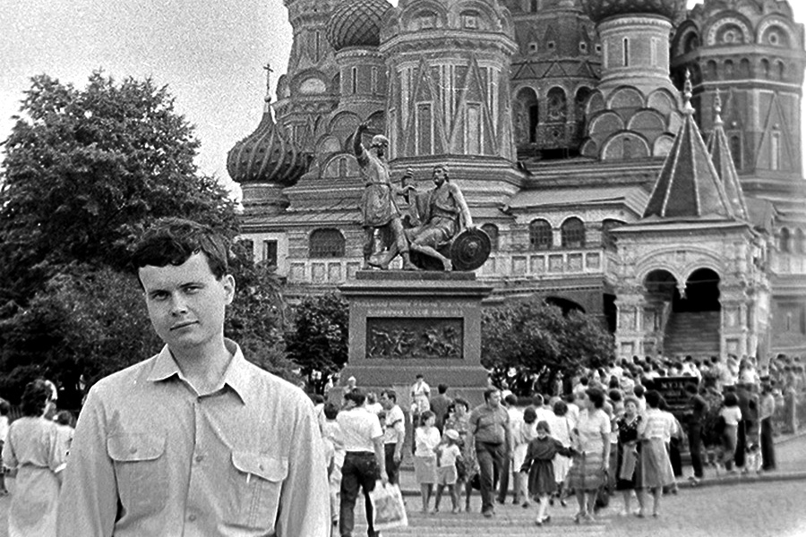

Часть 4
«Фигаро здесь, Фигаро там»Старшина
Деды
Аккорд
Долгая дорога в дюнах
Часть, прощай!
«Фигаро здесь, Фигаро там»
В один из дней в часть приехал старшина и сказал, чтобы я собирался. «С вещами?», - спросил я. «Нет, на один день, завтра в роте в Звенигороде должно пройти какое-то очередное отчетное собрание, и ты, как замкомвзвода по политчасти, должен на нем выступить». О чем собственно выступать, я не имел ни малейшего представления.
Я не брал с собой почти ничего, смысла таскать постель и кровать не было. Уже почти полтора месяца я не видел своих друзей. Встретили меня достаточно тепло, я раздал пацанам подарки - комплекты ВСО и пару сапог, экспропреированных с чердака, а ротный пожал руку и сказал: «Наслышан, наслышан». Он имел в виду поимку беглеца. «Хоть не издевайтесь, товарищ старший лейтенант», - ответил я.
Взводный выдал тезисы, по которым я должен был подготовить выступление. В принципе, ни о чем: дисциплина во взводе, политическое воспитание бойцов, повышение качества работы на стройке. Писать в казарме не хотелось, и я отправился к своему товарищу Сашке Крипаку, который на тот момент работал кладовщиком. У него на складе была маленькая комнатушка с топчаном, на тумбочке стоял старый приемник. Мы проговорили почти весь день, но ведь выступление само не напишется. Перед отбоем я попросил у ротного переночевать не в роте, а на складе у Сашки, где в спокойной обстановке и выступление состряпаю. Ротный не возражал.
Склад закрывался снаружи навесным замком, хилая деревянная дверь не внушала доверия, а под порогом была дыра, не то для кошки, не то для собаки. Сашка, закрывая меня снаружи, предупредил, чтобы я не курил в самом складе, а только в его комнатке. Но я это и сам понимал. К двум часам ночи я закончил свой доклад и прохронометрировал его. Вместо 25 минут получилось 18. «Ну ничего, буду читать медленно», - подумал я. Немного погоняв приемник, я устроился спать. Но не успел. У дверей раздались шаги. Разговаривали шепотом. «Может, Сашка с Сычем пришли?», - подумал я. Но они бы уже или открыли дверь или позвали меня. Я сидел молча в свете тусклой лампочки дежурного освещения. И тут под порог в дырку для кота просунулась рессора от прицепа, которая валялась недалеко от склада. Раздался треск порога и дверной коробки, но коробка выдержала. Я тихо подошел к двери. Когда рессору в очередной раз поглубже подпихнули под дверь, я схватил ее и затянул внутрь. Наступило несколько секунд полной тишины, а потом - топот ног и маты разбегающихся, налетевших в темноте на пустые бочки и ящики, разбросанными вокруг склада. Но выйти то я не мог, закрытый снаружи на навесной замок.
Конечно, никакого отпуска в очередной раз за спасение казенного имущества я не получил, но благодарность вынесли, за бдительность. Собрание, как и положено мероприятиям такого типа, прошло скучно, в полусонной обстановке. Каждый выступающий, которых было человек 10, бубнил под нос что-то очень государственно важное. Зато потом с каким удовольствием мы вышли из казармы и закурили. Молодые бегали от одного взвода ко второму с вопросом «Чекч Бер?». «Ек!» Им еще не положено так нахально «стрелять» сигареты у нас, старослужащих. А для своих – пока «Бер!»: «Ява», «Дукат», «Столичные», «Новость», «Астра», «Беломор» и «Памир», - расположены в порядке убывания финансовых возможностей. Вечером снова в Рузу, а пока – выходной день, можно поиграть в футбол перед казармой, посмотреть телевизор или посидеть за забором в леске.
Еще недели 3 я пробыл в части в Рузе, заканчивая приведение казармы в порядок. После чего обязанность присматривать за казармой возложили на пищевоза, который все равно 3 раза в день там бывал. А я с пожитками снова переехал в Звенигород.
Работа сторожем и ремонт казармы стали для меня просто подарком: я немного отоспался, отъелся и отдохнул. Если в часть я призвался 94-килограммовым «духом», то перед поездкой на ремонт казармы уже весил 70 кг в летней амуниции, хотя кирзачи сами по себе были достаточно тяжелыми, так что можно было смело вычесть еще, минимум, 2-3 килограмма. А вот за период восстановления казармы я набрал пяток килограмм. И самое главное - отоспался! Ведь во время службы солдат лишается многого, что было нормой в его жизни. Если с желанием секса в армии всегда боролись достаточно эффективно: бром в киселе. Он, конечно, не полностью убивал все «порочные» желания, но притуплял их достаточно сильно. Хотя при первой же возможности развлечься никто от этого не отказывался. Но иногда это развлечение заканчивалось свадьбой: кто последний, тот и папа (а иногда - военной прокуратурой). Но чаще всего - тайными походами в ближайший гражданский медпункт или амбулаторию для получения уколов, кажется, бициллина.
Желание поесть было хроническим, ведь в стройбате кормили плохо, да и многие офицеры еще и помогали: несли домой из столовой сметану, масло, мясо или гуляш, сахар, хлеб, а мы одну пайку масла делили на четверых, а в чай бросали один кубик рафинада, так как на всех не хватало. Потом прапор стал высыпать сахар прямо в бачок с чаем, чтобы не было видно, сколько его там. Но по вкусу можно было предположить, что сахара в чае почти не было. Однажды, еще в начале службы, мы выпросили в столовой кило комбижира, и шустро уплели его с черным хлебом. Когда появлялись деньги (перевод из дома, удачная продажа краски или редкая ночная халтура), то бежали в магазин и брали на все отделение варенку и батоны, иногда покупку дополняли джемом в маленьких дорожных коробочках и маргарином. Однажды миссию купить пожрать возложили на узбека и дали ему целых 5 рублей (по тем временам деньги немалые). Сказали купить пяток батонов, а на остальное - дешевой варенки. Цен 80-х годов я точно не помню, но хлеб затянул примерно на рубль-полтора, а сдачи должно было хватить килограмма на полтора варенки. Но узбек есть узбек: с хлебом он справился нормально, но при покупке колбасы в нем сработало понятие «дешевая», и он купил, кажется, килограммов 6 ливерки копеек по 60 килограмм. Нет, мы были очень возмущены бестолковостью нашего товарища и отправили его назад в магазин, но как и предполагалось, никто ничего менять ему не стал. Холодильники в казарме в ту пору не водились, а продукт скоропортящийся, так что всем отделением пришлось напрячься. Одна рука в шпатлевке, вторая - с бутербродом. Невзирая на постоянный голод, колбаса шла туго, хотя мы справились.
Но самым большим желанием было желание поспать. Спали везде и всегда, если появлялась такая возможность. Я уже писал, что еду к нам в Звенигород возили машиной. Она прибывала в роту к восьми-половине девятого. Но вставать позже, чем в 6-00 было не по уставу, и хотя мы и вылеживали еще 15-20 минут после подъема, пока не появлялся кто-то из офицеров и не начинал сбрасывать бойцов с кроватей на пол. На зарядку мы не ходили, так что до завтрака оставалось еще часа два. Обычно мы «забуривались» в ленкомнату и там додремывали: кто успел - сидя за столом, кто нет - прямо на полу, опершись о стену. Но вскоре ротный закрыл комнату на ключ, а после подъема стал выгоняли всех на улицу, чтобы не мешали дежурным убирать кубрики. Летом это было нормально: перелез через забор, и любая полянка за казармой - твоя. Но зимой... На стройке мы нашли лаз в подвал, где было тепло, и каждое утро почти всей ротой перемещались на досыпание. Спали в бушлатах прямо на полу, хотя немного доставали блохи. Когда приходила машина с завтраком, один из дневальных бежал к нам и устраивал еще один подъем.
Местами, просто специально приготовленными для сна, был клуб, где иногда проводились собрания, а еще реже - просмотры кинофильмов, и субботние политзанятия, с которых многие не вовремя захрапевшие при произнесении слов «коммунизм» отправлялись сразу в наряд по роте. Но ведь все эти лишения были во имя нашей Советской Родины, и их нужно было стойко преодолевать.
Старшина
Снова потекли обычные рабочие дни, неумолимо приближающие нас к дембелю. Только наш старшина, любитель «зеленого змия», иногда разнообразил нашу армейскую жизнь. Один раз в субботу утром, будучи под «шафэ» еще с вечера, он решил потравить в казарме платяных вшей, которые стали чаще нас посещать после прихода молодого пополнения. В это время мы все сидели в ленкомнате, а занятие вел какой-то полкан из Москвы, которого специально для этого и командировали. Ни мы, ни он не были в курсе инициативы старшины. А в это время старшина, спустившись в подполье, поджег там сразу две дустовые шашки (для надежности). Крупно-щитовая казарма с такими же крупными щелями практически сразу наполнилась едким дымом. Полкан не сразу понял, что случилось, но среагировал быстро. Команда «Срочно покинуть помещение» выла встречена нами одобрительно, но выполнена не сразу по причине почти нулевой видимости и удушливого запаха. С уважением могу сказать, что полкан последним вышел из ленкомнаты, предварительно проверив, чтобы никто не остался в помещении. Ротный же стоял у выхода из казармы и громко матерился, чтобы солдаты могли ориентироваться в дыму и двигались к выходу на его голос. Кашляя и отплевываясь, мы собрались перед казармой, наблюдаяя, как дым окутывает всю казарму, выходя практически отовсюду. Но когда появился старшина, весь в слюнях, соплях и с красными глазами, мы дружно заржали. Старшине досталось больше всего, так как в подвале, без света, да еще и под «градусом» он не сразу смог найти выход.
А тут еще и дневальные признались, что не успели выключить телевизор, висящий под потолком в самом конце казармы, который втихаря смотрели, пока шло занятие. Старшина послал одного из них в прорабский вагончик, в котором оказалась парочка новых противогазов. Они были нахлобучены на обоих дневальных, и «слоники» были отправлены в спецзадание по выключению телека. Но ушедшие «герои» почему-то не спешили возвращаться. Прошло минут 5, бело-серые клубы дыма уже перестали выходить из щелей, хотя продолжали медленно и красиво перемещаться внутри казармы. Ожидать дольше ротный не стал. Поплотнее прижав к лицу платок, старлей вбежал в казарму, а секунд через 5 раздались маты вперемешку с кашлем. Еще через пару секунд из дверей вылетели оба дневальных и ротный, который на ходу пытался отвесить им хорошие пендели. Сперва мы не могли понять в чем дело, так как мат, чередующийся с отдельными словами «сиськи», «письки», «мудаки», «балдеют» в логическую цепочку не выстраивались. Но оказалось все просто: в это время по телевизору шла аэробика, в которой группа девочек (один пацан не в счет) с отнюдь не модельными полувысохшими формами, а как раз спелые, налитые соком в нужных местах, очень грациозно выпячивали то свой верх, то низ, то наклонялись - и все крупным планом. Вот пацаны и «зависли»... Какое-то время ротный их воспитывал, но потом вспомнил про истинного виновника события - старшину, - и вместе с полканом начал чихвостить уже его. Когда дым рассеялся, они перебрались в канцелярию и там продолжили дрессуру прапора. После такой хим-обработки в казарме стоял горько-терпкий химический аромат еще несколько дней.
В следующий раз, готовясь к приезду очередного генерала, мы наводили в казарме «косметику»: покрасили табуретки, умывальник и освежили краскопультом бетонный забор в уставной зеленый цвет. Поскольку краска еще осталась, старшина решил воплотить анекдот в жизнь и заодно покрасить уже пожелтевшие, но еще не опавшие листья в тон забора. Мы не задумываясь выполнили приказ. Зачем лишний раз напрягать нервную систему и думать о дебильности распоряжений начальства. Но при выполнении работы по покраске сушилки пострадал наш героический Ибодуло: запах нитрокраски при высокой температуре и закрытой двери вызвал у него истерику и галлюцинации, хотя мы работали поочередно по 10 минут. Сперва мы подумали, что Ибо «косит», но когда у него из глаз потекли слёзы и он стал посылать нашего прапора-боксера в его присутствии, а потом еще добавил пару подробностей о том, как он вертел всех «кусков» на своем причинном месте, мы поняли - планка у Ибо упала и куда-то закатилась. В первые секунды было заметно, что прапор хотел наградить Ибодуло «скворечником», но почувствовал, что такое поведение неспроста. Зато потом Ибо три недели отдыхал в больнице.
За два года службы каждый из нас не единожды побывал на стационаре, а в санчасти... я молчу сколько раз. Только госпиталь и санчасть - это две большие разницы. В свое время в бытность «шнурком» я около месяца пролежал в военном госпитале в Наро-Фоминске с перебитой в драке барабанной перепонкой и, как следствие, сильным воспалением уха. Но, как водится, никакой драки не было, просто я неудачно упал с лесов и... пострадало ухо. Видимо в полете очень громко кричал.
Думаю, что не открою большого секрета, если скажу, что врачи госпиталя, в большинстве имевшие ученые степени и ведущие научную работу, предлагали лежащим в госпитале бойцам принять участие в том или ином небольшом обследовании, на которое нужно было дать письменное согласие. Если не согласишься - на выписку сразу после завершения лечения, а согласишься - еще неделю-полторы полежишь в палате, попринимаешь витамины, почитаешь книги: как говорят «солдат спит - служба идет». Нет, нас никто не облучал радиацией и не пересаживал органы. На нас строились статистические данные, например, сколько времени в среднем человек не чувствует кислородного голодания. Это обследование было несложным: надевалась маска от аппарата искусственного дыхания с легочным мешком, только подача воздуха из вне перекрывалась. Испытуемый дышал тем же воздухом, который сам и выдыхал. Мои данные оказались даже выше среднестатистических, и врач сказал, что мне можно было бы служить водолазом. А такие операции, как спиномозговая пункция в госпитале делались на потоке, 4-5 операций в день по 15-20 минут каждая. Регулярно делали и черепно-мозговые пункции, но это в основном тем, кто шел на «списание» из рядов ВС СССР и готовился стать дембелем-инвалидом. После участия в любом обследовании несколько дней кормили на убой, давали шоколад, но на протыкание спины соглашались не все, хотя бонус после него был намного большим.
Конечно, проведение всех этих пункций врачи могли обосновать медицинской необходимостью, но выглядело это не совсем логично: в армии, особенно в строевых войсках, служили парни без больших проблем со здоровьем, и обоснование проведения этой манипуляции каждому второму выглядело не совсем логично.
Больше всего задержаться в госпитале стремились таманцы - бойцы Таманской гвардейской мотострелковой дивизии. Их рассказы о жуткой дедовщине, об издевательствах офицеров и прапорщиков, об очень тяжелой службе и физически, и морально, объясняли их желание. Я лежал в палате с двумя пацанами из этой дивизии, и когда зашел попрощаться к ним перед выпиской, сменив больничную пижаму на ВСО, то они были в шоке. Что их больше всего удивило, так это то, что я, в отличии от них, практически не нервничал по поводу возвращения в роту. Да и форма одежды: на сапогах легкая «гармошка», кожаный ремень с согнутой бляхой, брюки ушиты, подшивка на прокол, на куртке впереди под клапаном не пуговицы, а змейка - очень удивила их, ведь по армейскому статусу я тогда был только «шнурок» - отслуживший полгода. Но последний писк стройбатовской моды их добил. Зимняя солдатская шапка, слегка почищенная сапожным кремом. Главное, чтобы в меру. Цвет шапки изменился на синеватый, волокна стали лежать ровнее и перестали лохматиться. Смотрелось очень даже пристойно.
У них же «излишества» в одежде позволялись только «дедам» (полтора года службы) и дембелям (после приказа министра обороны об увольнении в запас). Хотя со змейкой на куртке ВСО я немного слукавил: у нас в роте многие покупали за свои деньги у старшины комплект ВСО и отдавали его в ателье на перешивку: накладные карманы заменялись на врезные, куртка приталивалась и вместо пуговиц вшивалась змейка, а брюки, естественно ушивались. Получался очень симпатичный блатной комплект для того, чтобы потом дома пофорсить перед девчонками. Поскольку мое рабочее ВСО было не очень чистым, а перешитое я еще не отправил домой, то перед поездкой в госпиталь надел свой модерн. Было немного стремно, но как оказалось, очень не многие знали, как должна выглядеть стройбатовская роба.
Но вернемся к медицине. Санчасть в Рузе - это отдельная история. Все болезни санинструктор-ефрейтор и врач-капитан лечили йодом, зеленкой, анальгином и мазью Вишневского. Правда была еще и трудотерапия: тщательное мытье санчасти с дез-раствором. И никого особенно не волновало, есть у тебя температура или нет, хромаешь ты или у тебя понос. Зимой же температура в помещении санчасти не превышала 0 градусов и при мытье полов получался небольшой каток, а вода в питьевом бачке покрывалась ледяной коркой. Однажды зимой я тоже попал в санчасть с высокой температурой. И хотя нам выдавали еще по два дополнительных одеяла, но согреться никто не мог. Была там и кухонька, нет не для приготовления еды, а так, чайкУ заварить, водичку вскипятить. Из нагревательных приборов - маленькая электроплитка и пару кипятильников. Там же, на кухне, на всю стену был нарисован пейзаж - дом отдыха «Ласточкино гнездо», - притом достаточно красиво. Намёрзшись за всю ночь, мы ждали, пока наши «медики» повезут тяжелых больных в госпиталь, набирали ведро воды и ставили на плитку, превратив нагревательный прибор в обогревательный. Кухня превращалась в такую-себе парилку: согреться хоть как-то было можно. Но на третий день «сауны» мы заметили, что «Ласточкино гнездо» как-то изменилось: вместо пейзажа на стене возник полный сюр из смешавшихся потеков краски, Сальвадор Дали просто отдыхает. Да, нам тогда хорошо влетело. Но хорошо, что врач не узнал еще, что мы жарили гренки на оливковом масле, 200-граммовая бутылочка которого стояла в шкафчике в манипуляционной. Нет, немного мы оставили, мало ли где оно нужно и в медицине.
А видели бы вы, как наши медики лечили нарывы и гнойники, которые были нашей профессиональной болезнью. У моего друга Захара сильно нарвал большой палец руки и отек начал подниматься выше кисти, и он попросил, чтобы я сходил с ним в санчасть. Его посадили в коридоре у двери в кабинет, руку просунули в приоткрытую дверь. Санинструктор зажал руку дверью, а врач, без всякого обезболивания, стал кромсать нарыв хирургическими ножницами даже не надев халата. После этой картины, когда и меня постигла подобная болячка, но на ноге, я попросил нашего водилу купить в аптеке бинт, вату и фурацилин, а мазь Вишневского выпросил в санчасти. Вечером, прокипятив иголку и лезвие для бритья, я сделал себе небольшую «трепанацию» ноги, приняв из своего НЗ 150 грамм обезболивающего, хранившегося в бутылке от одеколона «Гусарский». Хотя большой необходимости в такой анестезии не было, просто появился повод мотивированно выпить. Еще несколько раз я прочищал рану, обрабатывал ее фурацилином и прибинтовывал немного мази Вишневского, а уже недели через полторы забыл о нарыве. А вот Захар больше месяца ходил на перевязки и чистки. Зато если кому уж очень сильно надоедала служба и хотелось домой - то это было к нашему врачу: ящик коньяка, и через месяц - домой. Правда статья не очень хорошая - 7»Б» - дебильность, несовместимая с армейской службой.
Соблазн отвалить на дембель появлялся у многих, но в таком уходе по 7»Б» были и подводные камни. Во-первых, уволившихся в запас военкоматы по месту жительства все равно отправляли бы каждый год на переосвидетельствование. И были случаи, когда дембельнувшиеся через год-два снова оказывался в рядах вооруженных сил, а уже отслуженное время в зачет не бралось. Вот и выходило, что можно было перехитрить самого себя. И второе: отношение к тебе на гражданке после увольнения по такой статье. Это последние лет 25, если ты откосил от армии, то ты молодец, а если не смог - лох. Тогда еще было наоборот, хотя «перелом» уже произошел и начинались взятки, липовые эпикризы и прочая химия. Но только начинались. Был момент, когда и я в начале службы задумывался над быстрым вариантом исхода из ВС СССР, но выглядело бы это все очень глупо: школа с высоким баллом аттестата (но без отличия по причине врожденной лени), 3 курса института с весьма неплохими показателями, и тут - дебил. А это нанесло бы сильный удар по самолюбию, или, точнее, по самоуважению. И, стиснув зубы и собрав всю имеющуюся волю, я смог перебороть это «порочное» желание. Не зря старослужащие говорили, что очень тяжело первые пол-года. И это было так. Нет, физически тяжело было все 2 года, но моральная ломка, определенная доля издевательств, частые депрессии - это был удел первых 6-и месяцев.
Да, что-то я отвлекся от нашего прапора. В третий раз тоже было вечернее шоу со старшиной в главной роли. Как-то раз он очень сильно набрался, и дневальные оттащили его обвисшее тело в канцелярию, где стояла кровать для дежурного офицера. Вечер рота провела без чуткого, почти материнского руководства. Как положено, в 22.00 мы стали на вечернюю поверку, которую проводил дежурный по роте. Видимо, услышав до боли знакомые звуки, старшина выполз из канцелярии и по стеночке доплыл к дежурному, забрав у него журнал поверок. Наверное, буквы в журнале были настолько пьяны, что фамилия Иванов у старшины никак не выходила, не говоря уже о фамилии Кутателадзе. Старшина периодически сползал на пол по стене, но стойко продолжал перекличку. Дневальные оставили свой пост и держали его под руки. Дежурный по роте переводил зачитываемые фамилии с языка, известного только старшине, на понятный язык. Цирк длился минут 40, так как старшина в воспитательных целях и лучших армейских традициях несколько раз начинал поверку сначала. Он даже не заметил, что дежурный после первой страницы сразу открывал ему последнюю. После поверки еще дышащее, но сильно обмякшее тело снова было доставлено в канцелярию. Старшина нашел в себе силы закрыться на замок. Понятно, что по команде «отбой» в армии наступает темное время суток, но мы уже давно не ложились сразу после отбоя. Кто-то кипятил чай, кто-то писал письмо, кто-то просто бегал курить. Тем более, что офицера в роте фактически не было.
Около 12 ночи, когда мы уже стали моститься на боковую, дневальный из молодых подал команду «Смирно», но глядя на дежурного, стучащего по голове пальцами и крутящего ими у виска исправился: «Дежурный по роте на выход» (после отбоя команда «смирно» не подается). К нам приехал комбат. Первым же вопросом было, где офицер. Дежурный по роте начал бегать и «искать» старшину. Комбат дал команду на контрольное построение, и пока рота строилась, дежурный шипел в замочную скважину канцелярии: «Товарищ прапорщик! Товарищ прапорщик! Выходите! Комбат приехал!». Но за дверями было тихо. Но когда рота построилась, дверь в канцелярию настежь распахнулась и оттуда строевым шагом, в спортивном костюме и в тапочках на босу ногу, вышел старшина. Не подходя близко к комбату, он отдал рапорт и, четко повернувшись, стал немного позади комбата. Дежурный еще раз провел контрольную поверку, и удовлетворенный комбат уехал. Как только УАЗик выехал за ворота, старшина снова сполз по стене и перестал подавать признаки жизни. Нет, он был жив, но потратил все свои оставшиеся силы, чтобы не опозорить почетное звание прапорщика.
Деды
Осень прошла спокойно. Как и положено, мы приняли духов в шнурки, а они нас в деды. Процедура принятия в деды поражала своим садизмом: кандидат в дедушки ложился на кровать лицом вниз, на мягкое место - подушка, один из молодых бил ниткой по подушке, а второй, сидя под кроватью, неистово орал. Никто, ни мы, ни младший призыв, не считали это мероприятие проявлением неуставных взаимоотношений. Все от души смеялись, а желающих покричать при каждом ударом ниткой становилось все больше. Да и молодые уже прошли четвертьфинал своей армейской службы. За 100 дней до приказа мы почти все постриглись под ноль, а многие выбрили головы. У тех, кто не захотел поддержать армейскую традицию, ночью был выстрижен внушительный клок волос, после чего им все равно пришлось постричься. Масло, как и положено, отдавали молодым.
Время стало тянуться медленнее, все жили ожиданием приказа Министра обороны на увольнение из рядов ВС СССР. Январь, февраль… Кто-то делал зарубки на какой-то деревяшке, кто-то отрезал по 1 см от сантиметровой мерной ленты. Мы ждали. Март, первая половина, вторая… И вот, наконец, кто-то несется в казарму, размахивая над головой газетой. «Дембель!!!» Да, мы уже дембеля, но впереди еще аккорд, и от того, как быстро мы его сделаем, зависел отъезд по домам.
Аккорд
Еще недели 3 мы работали на санатории, но, наконец, нас собрал ротный. Просто праздником стало его сообщение о том, что аккорд тот же самый, что и год назад: пионер-лагерь топографистов у села Ягунино.
Сборы были быстрыми. Объем ожидаемых работ был немаленький (отдыхающие «пионэры» не очень уважительно относились к труду строителей, и каждый год в лагере приходилось делать почти капитальный ремонт), и, как и год назад, закончить его нужно было до 1 июня.
Выполняя наружные работы, мы зачастую нарушали технику безопасности: чтобы не тратить время на сборку и разборку лесов (жилые корпуса были двухэтажными), мы работали, стоя на наружных карнизах, страхуя друг друга за ремень. Правда, если бы кто-то сорвался, то такая страховка не помогла бы, да и свалившихся было бы несколько больше. Помню, как пришлось красить потолок в клубе с 8-метровыми потолками. Лесов там не было, и красить пришлось, стоя на длинной стремянке с традиционно разными ножками. К тому же стремянка была 6-метровой и развести ее секции пошире не удавалось, иначе валик с 2-метровым держаком не достал бы до потолка. Валик от себя - и лестница сантиметров на 60 в верхней своей точке смещается вперед, к себе - отпрыгивает назад, при этом совершает еще какие-то неопределенные движения в стороны. В процессе покраски я присматривал места в зале, куда я могу приземлиться, если лестница откажется вернуться в исходное положение после очередного взмаха валиком. Да что лестница... В том же Звенигороде я красил лифтовую шахту изнутри с первого по 6-й этаж, перелезая по каркасным швеллерам. Я думал, что можно будет красить с крыши лифта, а кто-нибудь вручную, штурвалом, меня потихоньку бы опускал. Но лифтовая кабина стояла внизу без троса. Но мне даже нравилось лазить в шахте: закрыл лифтовые двери,примостился между этажами - и можно спокойно посидеть, тем более лазить следом и проверять работу все равно никто не будет. Главное - не заснуть! Но, слава Богу, никаких ЧП не было.
На аккорде спали мало, 4-6 часов в сутки, но не забывали и о себе, иногда немного зарабатывали, продавая краску в поселке или меняя ее на бутылку-другую самогона. Как-то даже попробовали сделать самогонный аппарат и перегонять яблочный уксус, который в магазине стоил копейки. Но проверить идею не получилось: стеклянные бутли и банки, в которых мы нагревали уксус, лопались на костре, и после нескольких неудачных попыток идея была похоронена.
Методика же «изъятия» краски со склада для продажи была несложной. Висящий на дверях колерной здоровенный навесной замок нас не смущал, так как в оконной раме стояло лишь одно стекло, держащееся на 4 гвоздях, вытянуть которые труда не составляло. Отобрав пару ведер краски, мы доливали назад в бочку столько же грунтовки и растворителя. Благо этого барахла было много. Затем таким же образом из 2-х ведер экспроприированной краски делали 3 для продажи. Ночью, закуривая сигареты, мы шли по узкой лесной тропинке, ориентируясь на огонек сигареты идущего впереди и на светящиеся окна поселка: спотыкались, чертыхались, чуть не падали, но ни одного ведра с краской не потеряли.
Недели за 4 мы закончили с жилыми корпусами и перешли к административным. Мне и Сашке Крипаку достался подвал-холодильник. Естественно, продуктов там не было, но с прошлого года стояли две большие бочки немного перекисшей квашеной капустой. Завхоз сама предложила нам ее продегустировать. Ну мы и продегустировали… Не скажу, что съели полбочки, но за неделю работы в подвале капусты стало существенно меньше, тем более мы набирали ее для всего отделения перед тем, как шли на обед.
Мы иногда прикалывались друг над другом. Это были и связанные холоши брюк, и намазанные ночью плиточной мастикой подошвы сапог, которые с утра весьма тяжело отрывались от пола (гвоздями не прибивали), и соль, высыпанная в чай своему корешу в столовой. Я как-то тоже подшутил над своим корешем Сашкой Крипаком. На стройке, чтобы не пачкать пилотку или шапку, мы часто работали в кепках с козырьком, сделанных из подстилочной бумаги. Сашка попросил нарисовать что-то крутое и грозное на его каптурике. Рисовал я не очень, но срисовать картинку худо-бедно мог. И в одном из журналов я нашел рисунок льва, которого более-менее и срисовал. Сашка остался доволен, но попросил еще написать что-то на боках шапочки, и желательно на английском. Я думал написать слово lion - лев, но рука как-то сама написала грозное слово chicken - ципленок. Сашок не отличался познаниями в английском, хотя в армию был отправлен после первого курса какого-то вуза. Он почти неделю ходил и понтовался своим кемпелем, пока не нашелся еще один знаток английского, который перевел Сашке смысл грозной надписи. Сашка минут 5 побегал за мной, потом надулся минут на 10, а через 15 минут я торжественно подарил ему почти такую же кепку, но уже с надписью lion. Друзья друг на друга долго не обижаются.
Мы частенько бегали в почтовое отделение, чтобы позвонить домой. Но для этого нужны были и деньги, и время. Да и на патруль можно было нарваться. А тут, работая в одном из корпусов, мы обнаружили телефон, параллельный директорскому, только без номеронабирателя. Но выход был. Мы стали набирать номера, нажимая на рычаг аппарата и считая нажатия, имитируя работу номеронабирателя. Это было еще то занятие, и правильно набрать междугородний номер удавалось с 10-20 раза.
К концу мая мы закончили и сдали объект. Все это время мы редко брились, да и мылись из литровой банки. И в таком виде мы, ставшие первой партией из нашей роты для отправки на дембель, вернулись в Звенигород.
Долгая дорога в дюнах
Нас встречали все, кто был в роте. Ротный тоже стоял на ступеньках казармы и сдерживал улыбку, глядя на нас. Из машин вываливались не солдаты, а партизаны второй мировой: недельно-двухнедельная небритость, сапоги, долгое время не видевшие ни щетки, ни крема, а с момента, когда мы стриглись «под 0» прошло почти 5 месяцев, и шевелюра у многих так отросла, что смотрелась увесистой копной. Это уже был финиш, перед Родиной у нас долгов не осталось.
Приведя себя в порядок, мы начали готовить парадки. У многих она напоминала выставочный экземпляр очумелых ручек: некоторые на китель вместо обычных солдатских погон брали прапорские и вплетали в них елочный дождик, буквы «СА» выпиливали из рандоля, а шеврон для жесткости напаивали на 6-8 слоев газетной бумаги через полиэтилен и окантовывали белой изоляцией, снятой с провода. На рубашку тоже цепляли прапорские погоны с наклеенными на них буквами «СА». Аксельбант плели из того, что было под рукой: капроновый шнур, бельевая веревка и даже антенный кабель, с которого снималась изоляция. Кабель смотрелся шикарно, но недолго - медь быстро окислялась. Свою форму я не мучил – кроме модернизированного шеврона и офицерских бархатных петлиц ничего лишнего не было. Я же собирался ехать домой в гражданке, которая уже ждала меня в одном из домов Звенигорода.
Еще один день мы провели в казарме, но он выдался неудачным – к нам заехал начштаба, чтобы «поздравить» с дембелем, как и год назад. В роте были перетрушены все тумбочки, кровати, каптерка и ленкомната на предмет дембельских аксессуаров. Наверное половина из увольняющихся осталась без альбомов и с оторванными шедеврами ручной работы. Но многие держали свою амуницию либо на стройке у сторожа, либо на складе, либо у кого-то из местных жителей. В общем, пострадавшие снова сели за рукоделие сразу после отъезда начштаба.
Утром за нами должна была приехать машина, чтобы везти в часть для отправки домой. Но приехавший с завтраком старшина сообщил, что демобилизация приостановлена по причине визита Рейгана в Москву. Все попытки договориться о выезде через Калугу или через другой город успеха не имели. Настроение испортилось. Оставаться в роте, чтобы терпеть репрессии руководства, не хотелось. Мы решили переселиться в поселок. Как ни странно, но ротный занял нейтральное отношение к нашей идее. Многие поехали в городок и сняли 8-местные номера в обычно пустующей беззвездочной гостинице, а я с Захаром и Сашкой Крипаком сняли комнату во флигильке в полукилометре от казармы. Флигелек был паршивенький, с очень низкими потолками, но нам это было «по барабану». Двое спали на достаточно широкой кровати, а один - на матрасе на полу по очереди. Хозяйку мы немного обманули, сказав, что будем жить только вдвоем. Проживание выходило чуть дешевле, чем в гостинице.
Время проходило в ожидании. Почти все в роте знали, где найти нас, а мы знали, где находятся остальные. Ну не было тогда мобильных телефонов. Каждый день мы наведывались в казарму, чтобы узнать последние новости. Пару раз ротный просил всех собраться, чтобы убедиться, все ли мы на месте, ведь у него могли быть неприятности. Действительно, мы все еще не были официально уволены из рядов ВС СССР и продолжали оставаться бойцами («бойцами», как это звучит применительно к стройбату) 4-й роты в/ч 01240, то есть фактически были в самоволке. Хотя с довольствия нас уже сняли.
Почти каждый день мы были на Москве-реке, ходили по городу, естественно, в гражданке. Винный магазин был только один на город, в посаде. Когда мы добрались туда, то увидели гигантскую очередь, человек 100, которые ждали своей очереди взять из зарешеченного окошка живую воду. К нам присоединилось несколько ребят, проживающих в гостинице, только они были в парадке. Когда уже почти подходила наша очередь, к магазину подъехал УАЗик, из которого вышел капитан и прицепился к пацанам, которые были в парадке, потребовав документы и попутно делая внушение по поводу облика советского воина-защитника. Мы немного «послали» капитана, а мужики из очереди добавили еще кое-что весомое в поддержку наших тезисов. Офицер выполнил нашу просьбу, в смысле, пошел.
Взяв по паре бутылок вина на брата, мы пошли на реку. Конечно, отдыхать было приятно, но чертовски хотелось домой. На четвертый день нашего «отпуска» к нам прибежал дневальный и сообщил, что завтра утром за нами приезжают машины из части. Настроение улучшилось. До вечера все были оповещены, куплены несколько бутылок самогона у хозяйки флигелька (ну его, этот посад). Часов до двух ночи мы вспоминали смешные моменты нашей службы, периодически опрокидывая стопарь и закусывая бутербродом с колбасой. Прожив 2 года плечом к плечу, мы, скорее всего, виделись последние разы, а воспоминания останутся на всю жизнь.
В 6 утра мы со всеми вещами собрались у казармы. Молодые с завистью смотрели на нас, и даже казалось, что они жалеют о нашем отъезде, ведь мы не были жестокими к ним и жили достаточно дружно. А за те редкие шалости пусть они простят нас, а следующий призыв уже простит их.
Машины пришли часов в 9 утра. Дорога казалась долгой, а стрелка на часах прилипла к циферблату. И вот мы уже проезжаем ворота части и останавливаемся у штаба. И тут как гром среди ясного неба… Взводный прапор, который ехал с нами, сообщил, что отправки никакой нет: Рейган продлил свой визит в Москве еще на несколько дней. Нас банально обманули.
Разместились мы в нашей казарме, которую я не так давно ремонтировал. Ни кроватей, ни постельных принадлежностей у нас не было, а с довольствия, как я уже писал, нас уже сняли. Все ходили взвинченные и агрессивные. Почти полсотни зомби перемещалось по казарме, отсчитывая количество шагов от одного края казармы к другому. Нам казалось, что хуже уже быть не может. Но оказывается, может. Вечером в часть к начштаба заехала пара офицеров, которые перед отъездом захотели встретится с дембелями. Всех нас построили на плацу, и вдоль строя пошел один из офицеров. Мы узнали его – это был посадский капитан, которого «послали» у винного магазина. Тех, кто тогда был в гражданке, он не тронул, а может и не запомнил, но троих, которые тогда были в форме, он безошибочно вывел из строя. Оказалось, капитан – замначальника одной из подмосковных комендатур. Неужели он оказался настолько злопамятным, что специально искал среди дембелей оскорбивших его лиц, или это произошло случайно? В принципе, под Звенигородом на тот момент была дислоцирована только наша строительная рота, а случайные заезжие дембеля вряд ли бы оказались в районе посада.
Сразу был вызван наряд из комендатуры, и наших пацанов спровадили на гауптвахту. Все увеличивающаяся злость распирала нас. Еще до вечера мы уничтожили запасы съестного, которые были с собой. Никто же не рассчитывал еще жить в части. А в чипке кроме галетного печенья и минералки ничего не оказалось.
Ночью началась тихая истерика: мы срывали со стен все, что можно было сорвать, сломали петли на дверях. В общем, шел выброс отрицательной энергии. В 3-4 утра попытались лечь поспать прямо на пол, подложив под себя обрывки плакатов и обломки стендов. Но спать не получалось, все равно кто-то бродил по казарме, кто-то отрывал очередную рейку, которой изнутри были оббиты панели казармы. Я, грешным делом, уже подумал, что тот разгром, который я устранял почти год назад, устроили наши прошлые дембеля. Может, по какой-то причине их тоже задержали с увольнением. Но если это было так, то они обошлись с казармой более ласково, чем мы.
Наутро два наших сержанта пошли в штаб по поводу поставки на довольствие. Вызванный начальник столовой сказал, что если приказ о довольствии будет подписан сейчас, то кормить нас начнут с завтрашнего дня. А сегодня после обеда нам смогут дать только кашу и черный хлеб, который обычно остается. Это было унизительно, дембеля в столовке едят кашу и чернягу… От каши мы отказались, выпили только почти несладкий чай.
День шел, как и предыдущий, в шатании по части. Все чаще стали вспыхивать ссоры, хотя хватало ума их сдерживать, ведь пострадавшими были мы все. Ночью многие заснули, точнее провалились в неспокойный сон, все также лежа на обломках и обрывках. Мои джинсы, футболка и легкая ветровка мало пострадали от такого образа жизни, но те, кто ехал в парадке, пострадал значительно сильнее. СтрЕлок на брюках и кителе почти не было видно а брюки стали сероватого цвета.
Третий день начался лучше: комбат отвоевал у комендатуры наших пацанов и они вернулись в казарму, только намного более измученными, чем мы. Одеты они были в старую грязную форму, абсолютно не выспавшиеся и замерзшие, несмотря на начало июня. Их форму привезли только под вечер. В этот день мы уже стояли на довольствии и, хоть без большого удовольствия, но поели. К вечеру нам сообщили, что встреча в верхах завершилась, и утром мы сможем покинуть часть. Но радоваться уже не было сил.
Ночь прошла в полусне, а утром всей толпой мы двинулись к штабу. Часть должна была выдать нам литер на билет, командировочные, зарплату, заработанную за 2 года, жалование за последний месяц в размере 10 рублей и документ о присвоении 4 разряда. Сумма заработка за 2 года у меня была с ног сшибательная: 34 рубля с копейками. У большинства была еще меньше. Больше всех заработали паркетчики, почти по 50 рублей на брата и нормировщик – 120 (самый большой трудяга в нашей роте). Но дальнейшее развитие событий у нас вызвало смех. В части не было корочек удостоверений, и нам предложили подождать еще 2-3 дня. Но не стоили они трехдневной задержки, и мы от них отказались. Денег в кассе хватило только на командировочные. Зарплату за 2 года пообещали выслать переводом (и потом таки выслали), а вот с жалованием за месяц вышел конфуз. Не дать их не могли, ведь нужны были наши подписи в ведомости, а давать пустую ведомость, чтобы мы в ней расписались, бухгалтерша отказалась. Нам рекомендовали подождать еще один день. Но в те годы были модны разные почины, типа «дневную зарплату голодающим детям Гондураса», и у нас тут же родился свой почин: «А мы передаем месячную зарплату в фонд Мира!!!», наверное, для Гондураса нам стало жалко этой сумасшедшей суммы. Все тут же принялись строчить заявления с просьбой о переводе месячной зарплаты на нужды по укреплению мира. Начштаба нехотя подписал их, выдал документы о завершении службы, и из дверей штаба мы вышли уже полностью демобилизованными.
Часть, прощай!
Знакомый кунг и еще две машины довезли нас до Рузы, откуда мы двинулись уже знакомым маршрутом на Тучково, а оттуда - в Москву. Часам к 4 мы были в столице нашей родины. Добравшись до Киевского вокзала, пока еще большая компания из 10-12 человек, едущих в Украину, ринулась к кассам. В 19 часов с копейками был мой поезд Москва-Знамянка. Но мы - пятеро корешей - переглянулись, и взяли билеты на следующий день. Правда в Знаменском направлении нас ехало всего двое, остальные: в Винницу, в Донецк и в Кривой Рог. Ночь провели на лавочке в сквере у вокзала, рассматривая прилежащие ночные московские достопримечательности, запивая пивом купленные на вокзале пирожки. Один раз к нам подошли менты, и по непонятным нам признакам опознали в нас дембелей (никто из нас не ехал в форме, так как московский патруль славился тупостью и бескомпромисностью: сперва забирали, а потом разбирались). Нагонять нас не стали, просто попросили не шуметь. А на рассвете, полюбовавшись слаженной работой машин пылесосов-поливалок, которые клином, как на параде, двигались по проспекту, отправились в метро на осмотр Москвы, точнее ее рынков. На одной из станции нам сказали, что до ближайшего рынка 3 остановки троллейбусом, и мы решили пройтись пешком. Но не учли, что расстояние между остановками может быть разным, особенно в Москве. Пешее путешествие заняло минут 50. Рынок впечатлил своим многообразием - множество кооперативчиков, которые что-то шили, клеили, вязали, - заваливали рынки своей продукцией. Рубашки в стиле american military, дермантиновые тонкие галстуки, джинсы… Это было время расцвета предпринимательства. В общем, немного приоделись, купили сувениры и решили побаловаться шашлыками. На входе в рынок стоял колоритный грузин, мангал которого и наполнял воздух на рынке шашлычно-вишневым ароматом. Но когда мы узнали цену его продукции, то поняли, что на многое нам рассчитывать не стоит. Взяли по 150 грамм этого благоухающего с корочкой мяса. Возле грузина стояла большая миска с кетчупом, и он широким жестом разрешил взять столько кетчупа, сколько хотим. И мы тут же этим воспользовались, превратив кусочки шашлыка в мясной кетчуповый борщ. Потом еще немного походили по Москве. Количество десантуры, которая праздновала дембель, поражало. Они колоннами, в обнимку с девчонками, с бутылками пива или водки, шумно перемещались по Москве, громко прославляя ВДВ. Все они были достаточно крепко выпившие. И где справедливость: нас, стройбат, не хотели отпустить в Москву из-за Рейгана, боясь каких-то инцидентов, зато десантники гуляли по полной. Вскоре Сашка с Сычом и Жекой поехали на вокзал, а я с моим тезкой еще немного побродили, но тоже не стали особенно задерживаться и вскоре двинулись к вокзалу, где уже и дожидались своего поезда.
Когда я сел в поезд, то почувствовал всю усталость, которая накопилась за последнюю неделю: нервы и бессонные ночи сделали свое дело. Добравшись до подушки, я мгновено заснул и проснулся, когда до Кировограда оставалось около 2-х часов езды. Я переоделся в парадку, которая аккуратно была сложена в сумке, чтобы предстать перед родным городом во всей своей красе.
Трудно описать, что я почувствовал, когда вышел на перрон. Спустя два года службы родной город показался мне чужим, незнакомым, не тем, который провожал меня в «школу мужества». Мозг медленно свыкался с мыслю, что все уже закончено и я дома, и что начинается совершенно другая жизнь: без нарядов, без круглосуточной работы, без «материнской любви» старшины и других офицеров. Но жить так, как я жил до армии, я, наверное, не смогу.
P.S. Конечно, сейчас вспоминается все хорошее или смешное, а ведь в армии было все: и болезни, и драки, и лечение в госпитале. Были и кровавые мозоли на ногах и руках, отмороженные руки и уши. Но все это было не зря. Армия учит ценить, ценить родных, которые далеко, друзей, которые рядом, ценить сухую одежду, стакан горячего чая, ценить неумело спетую песню, исполненную на не настроенной гитаре. Конечно, армия - школа жизни, которую каждый хочет пройти заочно, но если ты смог, выдержал, преодолел все трудности, ограничения, дебилизм, - то ты можешь с полной ответственностью считать себя мужчиной. Это действительно школа жизни, которая дает не столько знания, сколько жизненный опыт и умение увидеть главное, а не мишуру, которая со всех сторон окружает нас…
P.P.S. О дальнейшей судьбе нашей части (01240) я ничего не знаю, да и в интернете не удалось найти практически никаких упоминаний, но в том месте, где располагалась часть, сейчас успешно действует санаторий «Русь» (ЦВТ им. М.А.Лиходея), разбиты парки и скверы, вырублен лес и Рузское водохранилище представляется во всей своей красе. А о военном городке напоминают только остатки фундаментов, расположенные немного в стороне от дороги к санаторию. Но в памяти все осталось таким, каким было почти 30 лет назад.